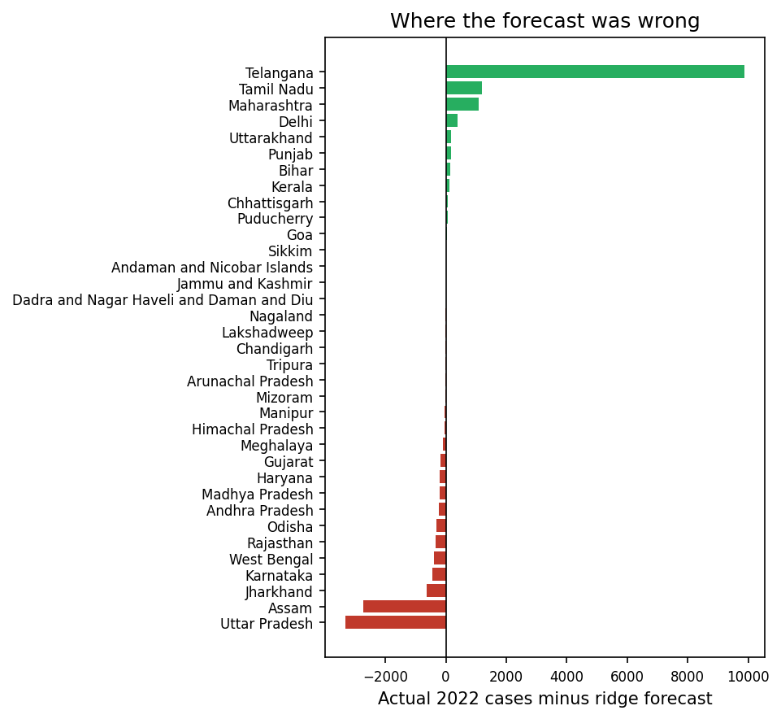
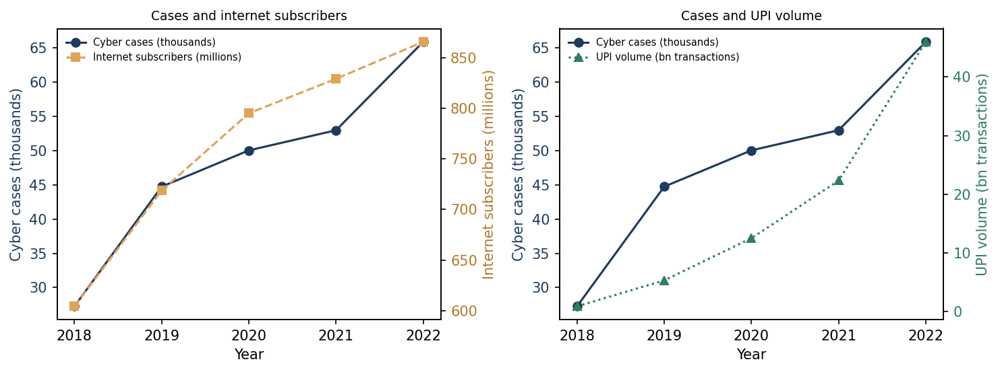
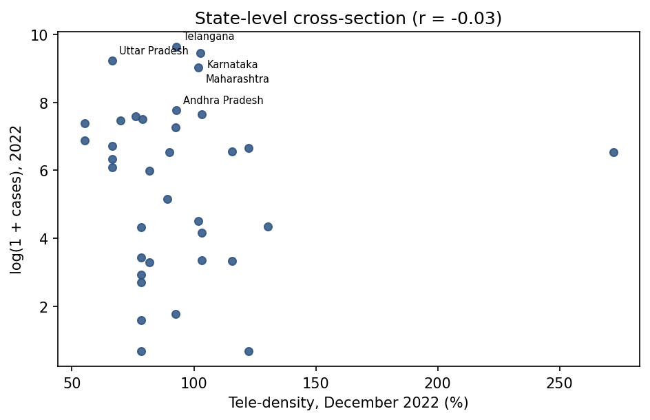
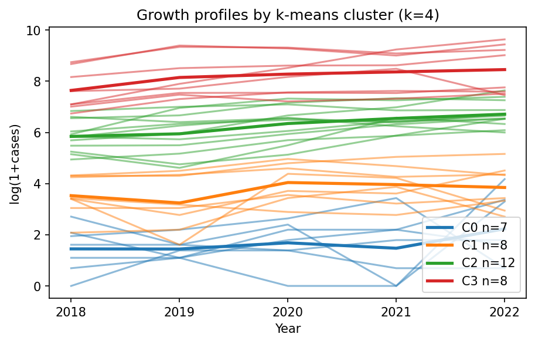
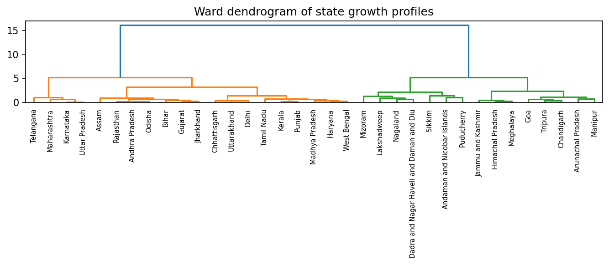

1 · Can next year's load be predicted?
Train on the years before each test year and predict 2020, 2021 and 2022. Every learned trend model is measured against the simplest possible guess — last year's count. Persistence is the benchmark, not the headline.
2022 holdout + three-year backtest
| Model | 2022 RMSE | Backtest | MASE |
|---|---|---|---|
| Persistence (2022=2021) | 1,359.8 | 999.9 | 1.00 |
| State mean 2018-21 | 1,994.0 | 1,388.2 | 1.33 |
| Pooled OLS (state FE + t) | 1,909.6 | 1,497.4 | 1.44 |
| Ridge a=0.1 (state FE + t) | 1,854.7 | 1,485.6 | 1.48 |
| Poly-2 + Ridge a=1.0 | 2,569.5 | 1,904.8* | 1.35* |
Green row = lowest 2022 RMSE. Backtest = mean RMSE over 2020–22. MASE 1.00 = persistence. *Quadratic enters two folds only.
Where the forecast was wrong

Green: under-predicted. Red: over-predicted. Telangana (+9,888) and Assam (−3,113) dominate.
2 · Is the rise linked to digital penetration?
National registrations track internet subscribers and UPI volume almost one-to-one. Tele-density moves the other way because subscriber counts were cleaned up — a denominator artefact, not protection.
Internet subscribers
log cases vs log subscribers, 2018–2022
UPI volume
log cases vs log transactions
Tele-density
falls 91.45% → 84.56% while cases rise

All-India registrations against internet subscribers and UPI volume, 2018–2022.
State-level check: does tele-density help?
The brief asks for a merge with tele-density (Problem 39). TRAI publishes it by licence service area, so each State was mapped to its circle and the merged value added to the forecast model. It does not improve prediction — and the State cross-section is flat.
Forecast with merged tele-density (2022 holdout)
| Model | RMSE | MAE | R² | coef. |
|---|---|---|---|---|
| Persistence | 1,359.8 | 580.8 | 0.861 | — |
| OLS + tele-density | 1,893.1 | 712.4 | 0.731 | -0.0039 |
| OLS + log tele-density | 1,846.2 | 689.1 | 0.745 | -1.3455 |
| Ridge + tele-density | 1,833.0 | 640.4 | 0.748 | -0.0077 |
Green row = best. The coefficient is log-case change per extra connection per 100 people.
2022 cross-section

Essentially flat (r = −0.03): the national trend in section 2 does not survive at State level.
data/circle_state_map.csv.3 · Four service tiers
States are grouped by their five-year profiles. The groups separate scale far more than growth (94% of level variance, 6% of growth), so read them as service tiers. Silhouette peaks at k = 2; k = 4 is retained for planning.
Puducherry, Andaman and Nicobar Islands, Sikkim, Dadra and Nagar Haveli and Daman and Diu, Nagaland, Mizoram, Lakshadweep
Jammu and Kashmir, Goa, Himachal Pradesh, Meghalaya, Tripura, Chandigarh, Manipur, Arunachal Pradesh
Tamil Nadu, Bihar, Gujarat, Jharkhand, Madhya Pradesh, Kerala, Punjab, Delhi, Haryana, Uttarakhand, Chhattisgarh, West Bengal
Telangana, Karnataka, Uttar Pradesh, Maharashtra, Andhra Pradesh, Odisha, Rajasthan, Assam

Thin lines: individual States. Thick: cluster mean.
Cluster separation
| k | k-means | Ward | Inertia |
|---|---|---|---|
| 2 | 0.607 | 0.607 | 45.0 |
| 3 | 0.477 | 0.489 | 26.0 |
| 4 | 0.432 | 0.464 | 17.1 |
| 5 | 0.412 | 0.437 | 12.9 |
| 6 | 0.389 | 0.423 | 10.2 |
Silhouette scores; higher is better. Peak at k = 2 (0.607).
Ward dendrogram: which States merge first

Read left to right: the first joins are the most similar profiles.
4 · State-level detail
Search or filter by cluster. The last column shows which benchmark was closer for that State in 2022.
| State/UT | Cluster | 2022 actual | Persistence | Ridge | |err| persist | |err| ridge | Closer |
|---|---|---|---|---|---|---|---|
| Telangana | C3 | 15,297 | 10,303 | 5,409 | 4,994 | 9,888 | persistence |
| Karnataka | C3 | 12,556 | 8,136 | 13,008 | 4,420 | 451 | ridge |
| Uttar Pradesh | C3 | 10,117 | 8,829 | 13,445 | 1,288 | 3,328 | persistence |
| Maharashtra | C3 | 8,249 | 5,562 | 7,169 | 2,687 | 1,079 | ridge |
| Andhra Pradesh | C3 | 2,341 | 1,875 | 2,583 | 466 | 241 | ridge |
| Tamil Nadu | C2 | 2,082 | 1,076 | 875 | 1,006 | 1,206 | persistence |
| Odisha | C3 | 1,983 | 2,037 | 2,287 | 54 | 304 | persistence |
| Rajasthan | C3 | 1,833 | 1,504 | 2,169 | 329 | 336 | persistence |
| Assam | C3 | 1,733 | 4,846 | 4,475 | 3,113 | 2,741 | ridge |
| Bihar | C2 | 1,621 | 1,413 | 1,486 | 208 | 135 | ridge |
| Gujarat | C2 | 1,417 | 1,536 | 1,582 | 119 | 164 | persistence |
| Jharkhand | C2 | 967 | 953 | 1,611 | 14 | 643 | persistence |
| Madhya Pradesh | C2 | 826 | 589 | 1,025 | 237 | 199 | ridge |
| Kerala | C2 | 773 | 626 | 648 | 147 | 125 | ridge |
| Punjab | C2 | 697 | 551 | 529 | 146 | 168 | persistence |
| Delhi | C2 | 685 | 356 | 307 | 329 | 377 | persistence |
| Haryana | C2 | 681 | 622 | 876 | 59 | 195 | persistence |
| Uttarakhand | C2 | 559 | 718 | 376 | 159 | 182 | persistence |
| Chhattisgarh | C2 | 439 | 352 | 362 | 87 | 77 | ridge |
| West Bengal | C2 | 401 | 513 | 794 | 112 | 392 | persistence |
| Jammu and Kashmir | C1 | 173 | 154 | 164 | 19 | 8 | ridge |
| Goa | C1 | 90 | 36 | 48 | 54 | 41 | ridge |
| Himachal Pradesh | C1 | 77 | 70 | 128 | 7 | 51 | persistence |
| Meghalaya | C1 | 75 | 107 | 165 | 32 | 89 | persistence |
| Puducherry | C0 | 64 | 0 | 8 | 64 | 55 | ridge |
| Tripura | C1 | 30 | 24 | 41 | 6 | 11 | persistence |
| Andaman and Nicobar Islands | C0 | 28 | 8 | 10 | 20 | 18 | ridge |
| Chandigarh | C1 | 27 | 15 | 36 | 12 | 8 | ridge |
| Sikkim | C0 | 26 | 0 | 2 | 26 | 24 | ridge |
| Manipur | C1 | 18 | 67 | 50 | 49 | 31 | ridge |
| Arunachal Pradesh | C1 | 14 | 47 | 30 | 33 | 15 | ridge |
| Dadra and Nagar Haveli and Daman and Diu | C0 | 5 | 5 | 5 | 0 | 0 | ridge |
| Nagaland | C0 | 4 | 8 | 8 | 4 | 4 | ridge |
| Mizoram | C0 | 1 | 30 | 21 | 29 | 20 | ridge |
| Lakshadweep | C0 | 1 | 1 | 6 | 0 | 4 | persistence |
Counts are registrations, not incidence. Ladakh is absent from model fits (no 2018–2019 values).
5 · Paper and data
Reproduce
All numbers and figures regenerate from data/datafile.xls.
pip install -r requirements.txt python code/run_experiments.py python code/make_dashboard.py
Data: NCRB via OGD Platform India (GODL-India); TRAI Performance Indicators; NPCI/RBI UPI statistics. Code: MIT.